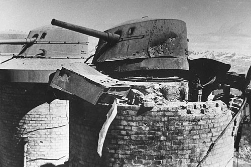

The Chaberton Battery
History
Chaberton battery
1898
Beginning of construction work of the Chaberton Battery on top of Monte Chaberton. Strategic was the placement at the top of the mountain as for that period the position at 3130m was considered impregnable.
The top of the mountain was leveled by 6 meters and from the Italian side a 12-meter high step was made, at the base of which the Fort was erected, just as we can still see today the masonry structure of the works.
1915
1918
The gun emplacements (the 149/35 cannons) are dismantled to be used on the Austrian front. For a brief period the fort is not occupied.
1930/40
Work on the fortifications resumes, the Centers of Colle Chaberton and the cave emplacements of the Batteria Alta del Petit Vallon are being built.
A tunnel is built in a cave, under the ramparts of the Chaberton Battery, prelude to an underground emplacement for the gun emplacements, never completed due to lack of funds and actual will by the rulers of the time.
1940
- June 10 World War II: The Italian batteries attack the French positions, the 149/35 cannons of Chaberton fire towards France.
- 12-20 June The Chaberton batteries contribute to bombarding military targets beyond the border, the various French fortifications in the Briançon area receive most of the hits without complaining of major damage.
- June 21st Unfortunately the work to move the artillery battery into cavern was never carried out, and the old position on the anti-snow towers proved losing, so the shots from the French 280mm mortars destroyed 6 of the eight towers in short time. It is the end of the fort, with 10 dead and numerous wounded...
- June 25 armistice is signed and fighting ceases.
1944
Italian-German troops garrison the fort, the summit of Monte Chaberton remains an excellent observatory for military operations, to supply the troops standing guard at the top of the mountain, a cable car is activated from Fenils toward Chaberton Pass.
1945
- April 12. The Germans withdraw, as do the Italians leaving the way clear for the French.
- April 25. Armistice signed. End of the World conflict.
1947
The peace treaty is signed that assigns the new borders, Monte Chaberton passes to France, most of the borders of the Cesana/Claviere area are redrawn in France's favor.
1957
Dismantling operations of all ferrous materials from the Fort, are brought down the valley with cable cars and with off-road vehicles through the Fenils road.
1978
A monument to the fallen of Chaberton is inaugurated in Cesana, died on June 21, 1940 during the Battle of the Alps.
{kind=link}
1987
The military road Fenils-Chaberton is closed, therefore it ceases its even minimal but essential maintenance. There are many who with 4x4 or motorcycle had climbed, (myself included) and now will not be able to climb what was the highest off-road route in Europe. Some, mostly German motorbikers, have attempted and continued to climb during recent years, defying the fines and seizures of motorcycles and vehicles carried out by French gendarmes and Italian guards. It was not rare to see the helicopter of the French Gendarmerie that took away the motorcycles seized on the top of M. Chaberton.

For those interested in more detailed historical notes I refer to the publications:"THE BATTERY OF THE CHABERTON and THE MILITARY SQUARE OF CESANA"
edited by PG. Corino with photos by R.Chirio
Published by Elena Morea Editore Turin 2006
"DESTROY THE CHABERTON - Edoardo Castellano - Tipolito Melli 1983"
which reports in detail the description of the days of fighting of the Chaberton Battery.
2009
{kind=link}
The commemorative plaque is inaugurated at Chaberton
with the name of those who died in the Alpine battle.
bibliography:
DESTROY THE CHABERTON - Edoardo Castellano - Tipolito Melli 1983
The Chaberton and the fortifications of the Tagliata di Claviere. - edited by Sylvie Bigoni
Castles and fortresses of Valle di Susa. Edition Mountain Museum "Duke of the Abruzzi" Italian Alpine Club - Turin Section
THE BATTLE OF THE ALPS - Alberto Turinetti di Priero. Susalibri 1990
HISTORY OF THE HIGH VALLEY OF SUSA - Luigi Francesco Peracca - Piero Gribaudi Publisher TORINO
OPERATIONS OF JUNE 1940 ON THE WESTERN ALPS - GENERAL STAFF OF THE ARMY - HISTORICAL OFFICE - ROME 1981
THE ALPINE WALL - THE FORTIFICATIONS OF THE WESTERN ALPS DURING WORLD WAR II - Alberto Fenoglio - SUSA LIBRI
THE FORTIFIED MOUNTAIN - Pier Giorgio Corino - Piero Gastaldo - MELLI Borgone
FORTIFICATIONS AND SPIES - Pier Giorgio Corino - MELLI Borgone
THE ALPINE WALL WORK IN CAVERN - Pier Giorgio Corino - MELLI Borgone
[home]
Unauthorized use of photos and videos is prohibited.
Photos and videos are copyright © Roberto Chirio: all rights reserved.